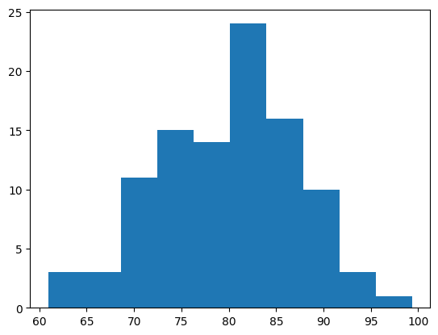
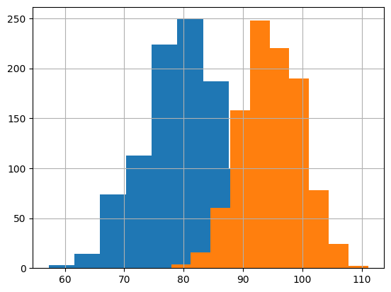
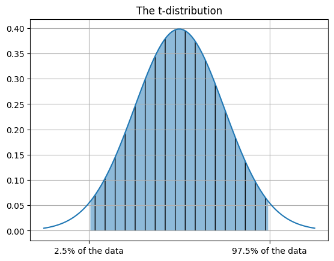
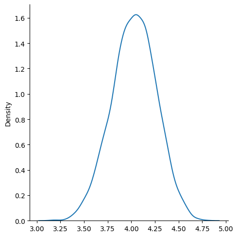
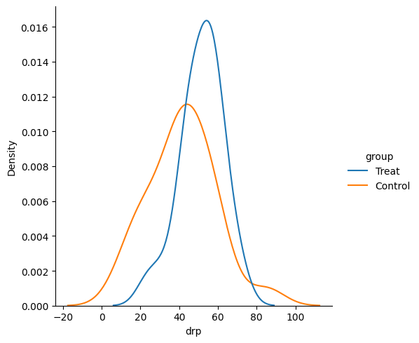

Inference and Hypothesis Testing#
OBJECTIVES
Review confidence intervals
Review standard error of the mean
Introduce Hypothesis Testing
Hypothesis test with one sample
Difference in two samples
Difference in multiple samples
import matplotlib.pyplot as plt
import numpy as np
import pandas as pd
import scipy.stats as stats
import seaborn as sns
Probability Distributions with scipy#
The scipy library provides a wide variety of probability distributions. These distributions have specific parameters involved in creating them, but all of the distributions share basic methods:
.rvs: generate random samples from the distribution.pdfor.pmf: probability mass or density function at some value(s).cdf: cumulative distribution functions
EXAMPLE
Consider a normal distribution with mean of 3 and standard deviation of 5 – often written as \(N(3, 5)\).
#create distribution
#generate 20 random values
#probability of observing a 4?
#probability of observing a 3 or less?
#plot the distribution
#draw cutoffs at 5 and 95 percent
Standardization#
Suppose we have two distributions on different domains from which we would like to compare scores.
An English Class has test scores normally distributed with mean 95 and standard deviation 5.
A Mathematics Class has test scores normally distributed with mean 80 and standard deviation 7.
#math class
math_class = stats.norm(loc = 80, scale = 7)
#histogram
plt.hist(math_class.rvs(100))
(array([ 3., 3., 11., 15., 14., 24., 16., 10., 3., 1.]),
array([60.95081505, 64.79019458, 68.62957412, 72.46895365, 76.30833319,
80.14771273, 83.98709226, 87.8264718 , 91.66585134, 95.50523087,
99.34461041]),
<BarContainer object of 10 artists>)

#english scores
english_class = stats.norm(loc = 95, scale = 5)
#make a dataframe
tests_df = pd.DataFrame({'math': math_class.rvs(1000), 'english': english_class.rvs(1000)})
tests_df.head()
| math | english | |
|---|---|---|
| 0 | 80.501438 | 92.719819 |
| 1 | 82.774425 | 94.977962 |
| 2 | 65.281505 | 91.481595 |
| 3 | 93.182586 | 94.254160 |
| 4 | 77.228166 | 97.925995 |
#plot the histograms together
plt.hist(tests_df['math'])
plt.hist(tests_df['english'])
plt.grid();

#problem: Student A -- 82 in math How many std's away from the mean is 82???
#. Student B -- 97 in English
#Who did better?
(tests_df - tests_df.mean()) / tests_df.std()
| math | english | |
|---|---|---|
| 0 | 0.062282 | -0.420936 |
| 1 | 0.391665 | 0.028876 |
| 2 | -2.143266 | -0.667585 |
| 3 | 1.899931 | -0.115302 |
| 4 | -0.412054 | 0.616112 |
| ... | ... | ... |
| 995 | -0.277273 | -1.366079 |
| 996 | 0.069838 | 0.518623 |
| 997 | 1.238939 | -0.458794 |
| 998 | -2.828583 | 0.578261 |
| 999 | -1.293638 | 1.108589 |
1000 rows × 2 columns
Standardizer#
The work of standardizing our data is extremely important for many models. To get a feel for an important library, your task is to build a Standardizer class that has two methods:
.fit()
.transform()
When the .fit method is called, you will learn the mean and standard deviation of the data. Upon learning these, assign them to the attributes .mean_ and .scale_. Then, use the .transform method to actually transform the data. Demonstrate its use with the tests_df. Note, you will need to call the .fit method prior to the .transform. As a bonus, try adding an error message that warns the user when calling fit prior to calling transform.
class Standardizer:
def __init__(self):
self.mean_ = None
self.scale_ = None
def fit(self, X):
self.mean_ = X.mean()
self.scale_ = X.std()
def transform(self, X):
return (X - self.mean_)/self.scale_
scaler = Standardizer()
scaler.fit(tests_df)
pd.concat([tests_df, scaler.transform(tests_df)], axis = 1)
| math | english | math | english | |
|---|---|---|---|---|
| 0 | 80.501438 | 92.719819 | 0.062282 | -0.420936 |
| 1 | 82.774425 | 94.977962 | 0.391665 | 0.028876 |
| 2 | 65.281505 | 91.481595 | -2.143266 | -0.667585 |
| 3 | 93.182586 | 94.254160 | 1.899931 | -0.115302 |
| 4 | 77.228166 | 97.925995 | -0.412054 | 0.616112 |
| ... | ... | ... | ... | ... |
| 995 | 78.158251 | 87.975025 | -0.277273 | -1.366079 |
| 996 | 80.553578 | 97.436585 | 0.069838 | 0.518623 |
| 997 | 88.621248 | 92.529765 | 1.238939 | -0.458794 |
| 998 | 60.552306 | 97.735980 | -2.828583 | 0.578261 |
| 999 | 71.144577 | 100.398327 | -1.293638 | 1.108589 |
1000 rows × 4 columns
Differences between groups#
#read in the polls data
polls = pd.read_csv('https://raw.githubusercontent.com/jfkoehler/nyu_bootcamp_fa25/refs/heads/main/data/polls.csv')
#take a peek
polls.head()
| p1 | p2 | p3 | p4 | p5 | |
|---|---|---|---|---|---|
| 0 | 5 | 1 | 3 | 5 | 2 |
| 1 | 1 | 3 | 5 | 5 | 5 |
| 2 | 2 | 3 | 5 | 3 | 5 |
| 3 | 4 | 3 | 3 | 3 | 5 |
| 4 | 5 | 4 | 3 | 2 | 2 |
Confidence intervals#
\(\alpha\): significance level – we determine this
t: t-score – we look this up
\(\mu\): we get this from the data
\(s\): we get this from the data NOTE: This is different than a population standard deviation.
t_dist = stats.t(df = len(polls))
print(t_dist.mean(), t_dist.std())
0.0 1.0067340828210365
x = np.linspace(-3, 3, 100)
plt.plot(x, t_dist.pdf(x))
plt.fill_between(x, t_dist.pdf(x), where = ((x > t_dist.ppf(.025)) & (x< t_dist.ppf(.975))), hatch = '|', alpha = 0.5)
plt.grid()
plt.title('The t-distribution');
plt.xticks([-2, 2], ['2.5% of the data', '97.5% of the data']);

#examine the first question data
q1 = polls['p1']
q1.head()
0 5
1 1
2 2
3 4
4 5
Name: p1, dtype: int64
#determine degrees of freedom
#i.e. length - 1
dof = len(q1) - 1
print(f'{dof} degrees of freedom')
149 degrees of freedom
#look up test statistic
#we need our alpha and dof
#where do we bound 97.5% of our data
t_stat = stats.t.ppf(1 - 0.05/2, dof)
print(f'The t-statistic is {t_stat}')
The t-statistic is 1.976013177679155
#compute sample standard deviation
s = np.std(q1, ddof = 1)
print(f'The sample standard deviation is {s}')
The sample standard deviation is 1.1317069525271153
#sample size
n = len(q1)
print(f'The sample size is {n}')
The sample size is 150
#compute upper limit
upper = q1.mean() + t_stat*s/np.sqrt(n)
print(f'The upper limit of the confidence interval is {upper}')
The upper limit of the confidence interval is 4.215923838809285
#compute the lower bound
lower = q1.mean() - t_stat*s/np.sqrt(n)
print(f'The lower limit of the confidence interval is {lower}')
The lower limit of the confidence interval is 3.8507428278573816
#print it
(lower, upper)
(3.8507428278573816, 4.215923838809285)
#use scipy
#1 - alpha
#dof
#sem
#(1 - alpha, dof, mean, sem)
stats.t.interval(.95, n - 1, np.mean(q1), stats.sem(q1))
(3.8507428278573816, 4.215923838809285)
#plot it
#take 500 samples of size 20 from poll 1, find mean, kde of the results
sample_means = [q1.sample(20).mean() for _ in range(5000)]
sns.displot(sample_means, kind = 'kde')
<seaborn.axisgrid.FacetGrid at 0x134a60d40>

Problem#
Find the 95% confidence interval for the second poll
Compare the two intervals, is there much overlap? What does this mean?
q2 = polls['p2']
Jobs Data#
The data below is a sample of job postings from New York City. We want to investigate the lower and upper bound columns.
#read in the data
jobs = pd.read_csv('https://raw.githubusercontent.com/jfkoehler/nyu_bootcamp_fa25/refs/heads/main/data/jobs.csv')
#salary from
jobs.head()
| job_id | title | agency | posting_date | salary_from | salary_to | |
|---|---|---|---|---|---|---|
| 0 | 378085 | HVAC Service Technic | DEPT OF HEALTH/MENTAL HYGIENE | 2018-12-21 | 385.0 | 385.0 |
| 1 | 377919 | Psychologist, Level | POLICE DEPARTMENT | 2018-12-31 | 62458.0 | 81131.0 |
| 2 | 379321 | Asset Manager | HOUSING PRESERVATION & DVLPMNT | 2019-01-07 | 52524.0 | 60000.0 |
| 3 | 378658 | Public Health Adviso | DEPT OF HEALTH/MENTAL HYGIENE | 2019-01-02 | 37957.0 | 47142.0 |
| 4 | 321570 | Deputy Commissioner, | DEPT OF ENVIRONMENT PROTECTION | 2018-01-26 | 209585.0 | 209585.0 |
Margin of Error#
Now, the question is to build a confidence interval that achieves a given amount of error.
PROBLEM
What is the minimum sample size necessary to estimate the upper salary range with 95% confidence within $3000?
need \(z\)-score: 1.96
E: 3000
\(\sigma\):
np.std(jobs['salary_to'])
#do the computation
#repeat for $500
Testing Significance#
Now that we’ve tackled confidence intervals, let’s wrap up with a final test for significance. With a Hypothesis Test, the first step is declaring a null and alternative hypothesis. Typically, this will be an assumption of no difference.
For example, our data below have to do with a reading intervention and assessment after the fact. Our null hypothesis will be:
#read in the data
reading = pd.read_csv('https://raw.githubusercontent.com/jfkoehler/nyu_bootcamp_fa25/refs/heads/main/data/DRP.csv')
reading.head()
| id | group | g | drp | |
|---|---|---|---|---|
| 0 | 1 | Treat | 0 | 24 |
| 1 | 2 | Treat | 0 | 56 |
| 2 | 3 | Treat | 0 | 43 |
| 3 | 4 | Treat | 0 | 59 |
| 4 | 5 | Treat | 0 | 58 |
#distributions of groups
sns.displot(x = 'drp', hue = 'group', data = reading, kind='kde')
<seaborn.axisgrid.FacetGrid at 0x134ad6f60>

For our hypothesis test, we need two things:
Null and alternative hypothesis
Significance Level
\(\alpha = 0.05\) Just like before, we will set a tolerance for rejecting the null hypothesis.
#split the groups
treatment = reading.loc[reading['g'] == 0]['drp']
control = reading.loc[reading['g'] == 1]['drp']
#run the test
stats.ttest_ind(treatment, control)
TtestResult(statistic=2.2665515995859433, pvalue=0.02862948283224572, df=42.0)
#alpha at 0.05
SUPPOSE WE WANT TO TEST IF INTERVENTION MADE SCORES HIGHER
#alpha at 0.05
t_score, p = stats.ttest_ind(treatment, control)
p/2
0.01431474141612286
PROBLEMS
Insurance adjusters are concerned about the high estimates they are receiving from Jocko’s Garage. To see if the estimates are unreasonably high, each of 10 damaged cars was take to Jocko’s and to another garage and the estimates were recorded in the
jocko.csvfile.
Create a new column that represents the difference in prices from the two garages. Find the mean and standard deviation of the difference.
Test the null hypothesis that there is no difference between the estimates at the 0.05 significance level.
mileage_data = 'https://raw.githubusercontent.com/jfkoehler/nyu_bootcamp_fa25/refs/heads/main/data/JOCKO.csv'